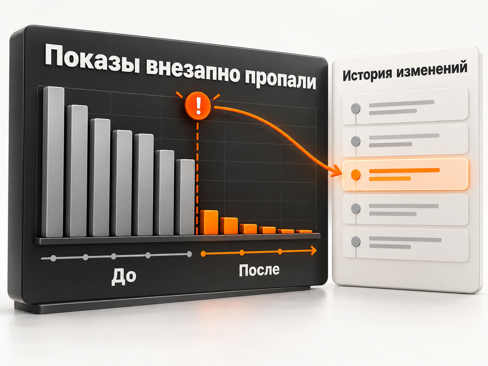

Блог о платном трафике
Почему нет показов в Яндекс Директе
Если в Яндекс Директе нет показов, сначала проверьте статистику, статус кампании, баланс, модерацию и доступность сайта. Если всё работает, причина может быть в слишком жёстких ограничениях стратегии, узком таргетинге или недостаточном спросе.
Отдельная ситуация, когда реклама раньше работала, а затем показы внезапно прекратились. В этом случае нужно проверить историю изменений и системные ограничения. Иногда причиной становится проблема на уровне аккаунта, которую не видно по статусу отдельной кампании.
Важно различать две ситуации:
- В статистике Директа действительно 0 показов.
- Показы в статистике есть, но вы сами не видите своё объявление в поиске Яндекса.
Во втором случае реклама может работать совершенно нормально.
Почему нет показов в Яндекс Директе: таблица причин и решений
Начните с этой таблицы. Она поможет быстро определить, где искать проблему, не меняя настройки кампании наугад.
| Причина | Где проверить | Что делать |
|---|---|---|
| Кампания остановлена | Статусы кампании, групп и объявлений | Возобновить показы |
| Нет денег или достигнут лимит | Баланс, настройки бюджета | Пополнить счёт или пересмотреть лимит |
| Модерация не пройдена | Статусы и предупреждения объявлений | Исправить замечания |
| Сайт недоступен | Сайт и настройки мониторинга | Восстановить доступность |
| Неверное расписание | Временной таргетинг и даты | Проверить время и период работы |
| Слишком низкие ставки | Настройки стратегии | Проверить ограничения ставок и бюджета |
| Недостижимая цена конверсии | Стратегия и цели Метрики | Пересмотреть целевые ограничения |
| Узкая аудитория | География, корректировки, минус-фразы | Проверить и ослабить избыточные ограничения |
| Недостаточный спрос | Ключевые фразы и условия показа | Проверить частотность и статус «Мало показов» |
| Ограничения аккаунта | Уведомления и контактные данные | Проверить требования системы и обратиться в поддержку |
Если причина не находится по таблице, переходите к подробной диагностике ниже.
Сначала убедитесь, что показов действительно нет
Я бы не проверял работу рекламы постоянным вводом своих ключевых запросов в Яндексе.
Рекламная выдача персонализируется. Яндекс учитывает действия пользователя, настройки аккаунта и другие сигналы. Кроме того, Директ не гарантирует постоянный показ объявления на определённой позиции.
Поэтому отсутствие собственного объявления в поиске ещё не означает, что реклама остановилась.
Проверять нужно статистику.
Откройте раздел «Статистика», затем «Мастер отчётов» и посмотрите:
- Показы и клики.
- Расход.
- Проверяемый период.
- Применённые фильтры.
- Дату и время обновления данных.
Яндекс рекомендует использовать Мастер отчётов для получения наиболее актуальной статистики. Разные разделы интерфейса могут обновляться с разной периодичностью.
Если кампания только что запущена или изменена, учитывайте время активизации. По документации Яндекса применение некоторых изменений может занимать до 180 минут.
Если активизация завершилась, а в отчёте по-прежнему 0 показов, переходите к диагностике.
Подробнее об анализе статистики можно прочитать в статье «Мастер отчётов Яндекс Директа».
Проверьте статус кампании, групп и объявлений
Первое, что я проверяю при полном отсутствии показов, - фактический статус рекламы.
Кампания может выглядеть настроенной, но внутри окажется остановленной группа или объявление.
Посмотрите:
- Активна ли сама кампания.
- Активны ли группы и объявления.
- Не находится ли кампания в архиве.
- Не закончился ли период её работы.
- Нет ли предупреждений и ограничений.
- Не появился ли статус, связанный с модерацией или данными для маркировки рекламы.
Отдельная ситуация возникает после модерации. Некоторые объявления во время проверки могут быть остановлены. После одобрения они иногда остаются остановленными, и показы требуется включить вручную.
Обращайте внимание не только на статус кампании, но и на статусы отдельных групп и объявлений. Общая надпись «Идут показы» не гарантирует, что каждое объявление действительно получает трафик.
Проверьте баланс и ограничения бюджета
Показы могут остановиться из-за отсутствия денег, достижения бюджетного ограничения или слишком маленького бюджета относительно стоимости трафика.
Проверьте остаток на общем счёте и ограничения бюджета конкретной кампании.
Положительный баланс аккаунта сам по себе ещё не означает, что кампания может продолжать показы.
Например, недельного бюджета может хватать всего на несколько дорогих кликов. В конкурентной тематике при таких настройках реклама способна показываться крайне редко.
Также проверьте, не появилось ли предупреждение о временной остановке показов из-за недельного бюджета.
Если деньги есть, но расход не идёт, это ещё не повод автоматически увеличивать бюджет. Сначала исключите другие ограничения.
Для планирования расходов пригодится статья «Прогноз бюджета Яндекс Директ: как рассчитать расходы, клики и заявки».
Проверьте модерацию и ограничения тематики
Если объявления не прошли модерацию, показы могут отсутствовать независимо от баланса и настроек стратегии.
Проблема может относиться:
- Ко всему объявлению.
- К отдельным рекламным материалам.
- К продвигаемой тематике.
- К документам, необходимым для рекламы определённых товаров и услуг.
Если объявление отклонено, проверьте указанную причину и исправьте материал.
При этом изменение объявления не всегда означает немедленную остановку уже работающей рекламы. В некоторых случаях до завершения модерации продолжает показываться предыдущая версия объявления.
Поэтому при нуле показов сначала смотрите статусы и предупреждения, а не переписывайте заголовки и тексты без установленной причины.
Проверьте, не остановил ли рекламу мониторинг сайта
В Яндекс Директе есть мониторинг доступности сайта. Если система определяет, что сайт недоступен, она может автоматически приостановить показы.
По информации Яндекса, при недоступности сайта более 15 минут мониторинг способен остановить рекламу. После восстановления доступности показы возобновляются автоматически, когда система повторно проверит сайт.
Получается довольно неприятная ситуация: рекламная кампания настроена правильно, деньги на счёте есть, но из-за временной недоступности сайта реклама перестаёт работать.
Владелец бизнеса может даже не знать, что ночью или утром хостинг некоторое время не отвечал.
Проверьте:
- Открывается ли сайт.
- Нет ли ошибок сервера.
- Доступна ли главная страница.
- Не возникло ли предупреждение мониторинга сайта.
- Восстановились ли показы после устранения проблемы.
Если сайт уже работает, а показов нет, проверьте, завершилась ли повторная проверка его доступности. При длительном отсутствии восстановления стоит обратиться в поддержку.
Проверьте расписание и даты кампании
Если реклама не показывает объявления именно сейчас, причиной может быть временной таргетинг.
Например, кампания настроена только:
- С понедельника по пятницу.
- С 09:00 до 18:00.
- По определённому часовому поясу.
Проверяя её вечером или в выходной, вы можете не увидеть новых показов.
Одновременно проверьте даты начала и окончания кампании.
Иногда рекламодатель случайно устанавливает будущую дату запуска или забывает изменить дату завершения продвижения.
Ставка или ограничения стратегии слишком низкие
Если кампания активна, объявления прошли модерацию, а деньги есть, проверьте ограничения стратегии.
При ручном управлении причиной могут быть слишком низкие ставки. Объявление не выигрывает нужные аукционы и получает мало показов.
Но проблема встречается и в автоматических стратегиях.
Например, рекламодатель устанавливает целевую цену конверсии заметно ниже той, которую система может обеспечить при текущих условиях. Алгоритм снижает ставки, поскольку не находит достаточного количества подходящих аукционов.
Слишком жёсткое ограничение цены конверсии может привести к практически полной остановке показов даже при положительном балансе.
Отдельно проверьте работоспособность выбранных целей в Яндекс Метрике. Если данные о конверсиях перестали поступать, это тоже может повлиять на работу стратегии.
Если показы пропали после изменения целевой стоимости конверсии, ограничения CPC или других параметров стратегии, начните диагностику именно с них.
Не стоит одновременно менять бюджет, цену конверсии и все остальные настройки. Иначе будет сложно определить настоящую причину.
Подробнее о ставках можно прочитать в статье «Цена за клик в Яндекс Директе».
Вы слишком сильно ограничили аудиторию
Иногда рекламодатель пытается сделать рекламу максимально точной и постепенно лишает её практически всего охвата.
Количество показов могут уменьшать:
- Слишком узкая география.
- Короткое расписание.
- Жёсткие понижающие корректировки.
- Небольшие сегменты аудиторий.
- Сочетание нескольких условий через «И».
- Большое количество ограничивающих минус-фраз.
- Исключённые площадки в РСЯ.
Это особенно характерно для ретаргетинга.
Если сайт получает немного посетителей, а рекламодатель создаёт небольшой сегмент и добавляет дополнительные ограничения, подходящей аудитории может просто не хватить.
При отсутствии показов важно проверять не только отдельные настройки, но и их совместное влияние на охват.
Каждая настройка может выглядеть разумной, однако вместе они способны почти полностью исключить показы.
Проверьте спрос и статус «Мало показов»
Иногда ноль показов объясняется отсутствием достаточного спроса при заданных условиях.
Например, вы выбрали несколько длинных низкочастотных ключевых фраз, ограничили рекламу небольшим городом и добавили большое количество минус-фраз.
Формально кампания работает, но подходящих поисковых запросов практически нет.
Отдельно проверьте статус групп объявлений.
Статус «Мало показов» означает, что при текущих настройках группа имеет крайне небольшой потенциал показов. Такие группы могут практически не участвовать в показах, пока условия не изменятся.
Проверьте:
- Частотность поисковых запросов.
- Географию продвижения.
- Минус-фразы и операторы.
- Категории автотаргетинга.
- Аудиторные ограничения.
- Расписание показов.
- Статусы групп объявлений.
При необходимости пересмотрите семантику или объединение слишком узких групп.
Но не расширяйте сразу все настройки. Иначе показы могут появиться, а причина проблемы останется неизвестной.
Реальный случай: показы остановились из-за подтверждения телефона
В моей практике был случай, когда показы одновременно остановились во всех рекламных кампаниях аккаунта.
При этом в интерфейсе у них оставался статус «Идут показы». Явных ошибок и предупреждений не было. Кампании выглядели работающими, но фактически трафик перестал поступать.
Причину удалось установить только после обращения в поддержку Яндекс Директа.
Выяснилось, что требовалось повторно подтвердить контактный номер телефона в одной кампании со стратегией с оплатой за конверсии.
Особенно неожиданным оказалось то, что остановились и другие рекламные кампании аккаунта, работавшие с оплатой за клики.
После повторного подтверждения телефона показы восстановились во всех кампаниях.
Это реальный пример из моей практики, а не универсальное правило работы Яндекс Директа. Однако он показывает, что иногда причина полной остановки находится вне стандартных настроек рекламной кампании.
Практический вывод: если показы пропали сразу во всех кампаниях, деньги есть, статусы активны и технических ошибок не видно, проверьте уведомления, требования к контактным данным и ограничения аккаунта. Если причина остаётся неясной, обратитесь в поддержку.
Если Яндекс Директ работал, а потом показы пропали
Внезапную остановку уже работающей рекламы нужно диагностировать иначе, чем отсутствие показов после первого запуска.
Главная задача - найти момент падения и понять, что изменилось непосредственно перед ним.
Сначала проверьте историю изменений
В Яндекс Директе есть отдельный инструмент «История изменений».
Откройте список кампаний, найдите нужную кампанию и выберите пункт «История изменений» в её меню.
Посмотрите, не менялись ли перед остановкой:
- Стратегия и ограничения ставок.
- Бюджет.
- География.
- Расписание.
- Корректировки ставок.
- Условия показа и настройки групп.
- Статусы объявлений.
Обязательно сравните время внесения изменений с моментом, когда показы начали снижаться.

Важно учитывать, что не все автоматические остановки отражаются в истории изменений. Например, остановка из-за нехватки денег или недельного ограничения бюджета может не появиться в журнале.
Если настройки не менялись
Если история изменений не объяснила проблему, проверьте:
- Остаток денег и бюджетные лимиты.
- Мониторинг доступности сайта.
- Модерацию и предупреждения.
- Состояние стратегии и получение данных о конверсиях.
- Изменение спроса и конкурентной ситуации.
- Уведомления и ограничения аккаунта.
Если показы резко пропали во всех кампаниях одновременно, я бы уделил особое внимание общему счёту и ограничениям аккаунта.
Если же остановилась только одна кампания непосредственно после редактирования стратегии, сначала проверяйте её параметры.
Сам момент остановки часто помогает найти причину быстрее, чем последовательное изменение всех настроек рекламы.
Быстрый чек-лист, если реклама не показывается
Чтобы не менять настройки хаотично, придерживайтесь следующего порядка:
- Откройте Мастер отчётов и убедитесь, что действительно стоит 0 показов.
- Проверьте статусы кампании, групп и объявлений.
- Посмотрите баланс, бюджет и предупреждения модерации.
- Проверьте сайт, мониторинг, даты и расписание.
- Изучите ставки, стратегию и ограничения по цене конверсии.
- Проверьте географию, минус-фразы, аудитории и спрос.
- Если реклама ранее работала, посмотрите историю изменений.
- Если причина не найдена, проверьте ограничения аккаунта и обратитесь в поддержку.
При обращении в поддержку укажите номер кампании, период отсутствия показов и результаты уже выполненных проверок.
Если показы есть, но их просто меньше ожидаемого, задача несколько другая. Здесь необходимо оценивать спрос, охват, ставки и эффективность аукционов, а не искать исключительно техническую блокировку.
Более подробная проверка описана в статье «Аудит Яндекс Директ: что проверить и как найти проблемы в рекламе».
Главное
Если в Яндекс Директе нет показов, не начинайте с переписывания объявлений или добавления новых ключевых фраз.
Сначала исключите технические стоп-факторы: статусы, баланс, модерацию, доступность сайта, расписание и даты. Затем проверьте ограничения стратегии, ставки, таргетинг и спрос.
Если реклама раньше работала и внезапно остановилась, ищите конкретное изменение или системную причину.
И помните: отсутствие собственного объявления в поисковой выдаче ещё не означает отсутствие показов. Работу рекламы нужно оценивать по статистике Яндекс Директа, а не по результатам собственного поиска.